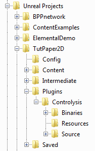
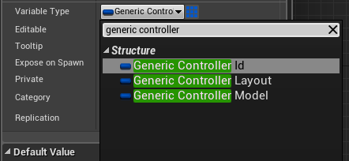
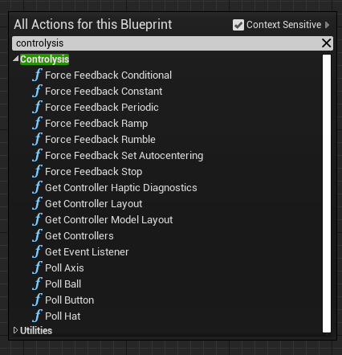

Generic controller support for UE4. Provides blueprint nodes for discovering and polling all controllers recognized by SDL, including those only having a DirectInput driver and no XInput support.
Copy the plugin itself (the Controlysis folder) into your plugins directory as shown. The image shows installing it into a single project (named TutPaper2D). If your project has no Plugins directory, just create one -- plugins will be loaded from it automatically with no additional setup. Alternatively, you can copy it into the Plugins folder of your engine install so it will be available to all projects on your system, and in the Plugins window of the editor it will appear under "Built-in" instead of "Project". In either case, it will be under the category "Input Devices".
Note: Do not install the plugin in both your engine and your project. One or the other is enough.
The plugin is set to be enabled by default, so you should have access to the functions and types without doing anything else. If you don't, go into the Plugins window and make sure Controlysis is set to Enabled.
There is no project-level setup, no components to add to your BP/map, and no context or scope to keep track of. Just go into any blueprint you want and start calling Controlysis functions to read input. Be aware that the ability to support multiple control devices per local player means that Controlysis cannot abstract away the local-player-to-device mapping like the default UE4 control system does. So you will need to query the correct controller for each player.
Typing "generic controller" in the variable type autocomplete will bring up all the types related to identifying controllers. The only other type provided by Controlysis is the HatDirection enum.
In Controlysis, you reference an individual controller by its ID (GenericControllerId). Breaking this struct reveals it is a combination of Model (GenericControllerModel) and Instance (integer). By combining the two, the semantic meaning is something like "The third XBox360 controller" or "The first TM Warthog flight stick". Referring to controllers this way provides stability -- for example, adding or removing controllers between sessions could change the DirectInput index of existing controllers, screwing up all your keybinds if you referred to controllers that way. This method makes sure any Controller Id always refers to the same thing regardless of detection order. Also, the Instance is determined when your game is launched -- so if you have 2 or more controllers of the same model connected, and you take away the first one, then next time you launch the game there will still be a controller of that model at Instance 0.
The Model (GenericControllerModel) represents the "Hardware Id" in USB parlance. (Yes, Bluetooth controllers have the same kind of ID.) It consists of the VID (Vendor Id, representing the manufacturer) and PID (Product Id, assigned by the manufacturer for each model of device they make). Together, they uniquely identify a controller model, for example "an XBox 360 controller" or "a PS4 controller". If you want to provide special support for a certain kind of controller, for example, providing a default configuration different from the normal one, then you should find out the device's VID and PID and compare them against this. You could also compare against the text name found in the Layout, but that may be less reliable.
The Layout (GenericControllerLayout) describes the features of a controller of a certain Model. It includes how many of each input it has (buttons, axes, etc) as well as the text name. You should always use the Layout to verify that a controller actually has a feature before you try to poll it or Bad Things can happen (ranging from "nothing" to "crashing your game").
All functions provided by Controlysis are in the "Controlysis" category, so typing that name into the Blueprint autocomplete will bring up everything.
Controlysis includes an example pawn/character "ControlysisDemoCharacter" that shows how to use Controlysis to control a character similar to the one in the built in "First Person Example" project. It will use the first controller it finds that looks like a 2-stick console controller, print its name on BeginPlay, and let you move around with the sticks, shoot with button 0, and jump with button 1. The easiest way to use it: just set your game mode to ControlysisDemoGameMode, make sure there are no other default pawns to interfere (there will be on the First Person Example but not on a blank project) then click Play and you should spawn as the ControlysisDemoCharacter.
Controlysis also includes a UMG widget called "ControllerDiagnostic" which shows the status of every input on every controller attached to the system, in real-time via UMG property binds. No setup needed, just add it to the viewport and it works. This also demonstrates that you can poll the same inputs from multiple places without side effect (except for trackballs as they return delta per poll).
You would need to set the input mode to UI in order to directly interact with the ControllerDiagnostic i.e. to click its buttons or scroll through the controllers if you have more than 1 screen worth of controllers connected to your system.
Note that you can use Controlysis in tandem with the default UE4 input system. This means you can implement mouse and keyboard the same way as in the stock First Person Template, while reading controllers via Controlysis. The movement from multiple input types is added together in Blueprint.